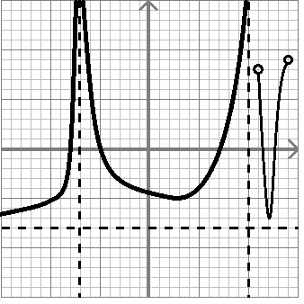

Effectuer l'étude (domaine, image, croissance/décroissance, ordonnée à l’origine, zéros, signe, extremums relatif/absolu) de la fonction suivante :

Trouver l’équation générale de la droite perpendiculaire à
qui passe par le point
.
Représenter graphiquement la situation.
Calculer la distance entre l’ordonnée à l’origine et le zéro de la fonction
.
Représenter la situation graphiquement la situation.
Tracer (sommet, zéros, ordonnée à l’origine) la parabole
.
Tracer (sommet, zéros, ordonnée à l’origine) la parabole
en utilisant sa forme canonique.
Trouver la forme canonique des paraboles
et
.
Trouver la forme générale des paraboles
et
.
Trouver l’équation générale de la parabole qui passe par le point
et qui a
pour sommet.
Trouver l’équation générale de la parabole qui passe par les points
,
et
.
- Évaluer
- Évaluer
- Évaluer
- Trouver la ou les valeurs de
telles que